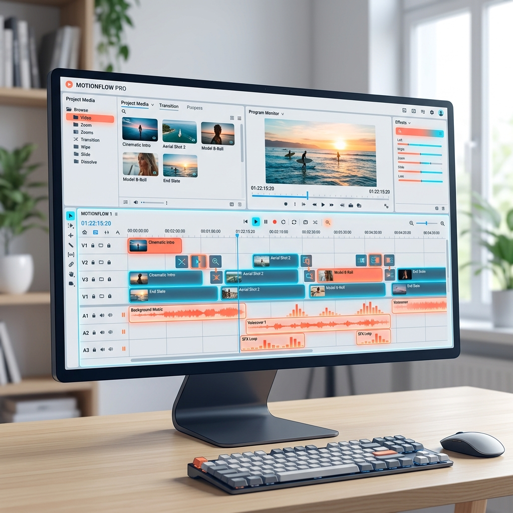
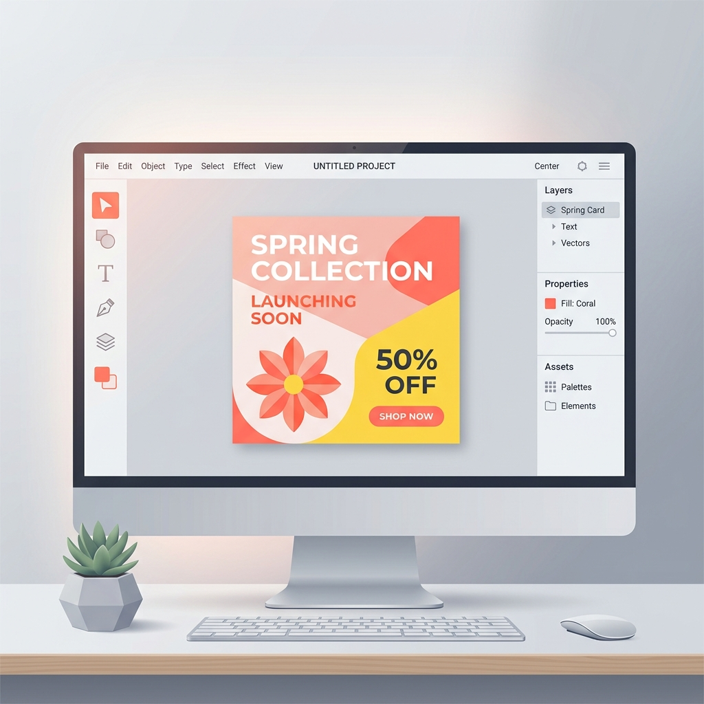

My On-the-Job Training
Experience
Journey
An inside look at what I accomplished, the tools I implemented, and the skills I refined during my academic internship program.
Internship Pillars & Roles
A detailed breakdown of key tasks, operational duties, and systems managed during my OJT.


Pillar 01IT Support & System Diagnostics
Provided remote and physical hardware repair, terminated high-speed local cabling, and monitored live sessions to ensure continuous workspace connectivity.
- Diagnosed motherboard, RAM, and storage anomalies to perform physical hardware repairs.
- Crimped, tested, and routed CAT6 Ethernet cabling to support wired network infrastructure.
- Managed live Class audio/video channels, coordinating permissions and participant configurations.
- Guided users through remote system configurations, software updates, and secure setups.
Tools & Environments Used
Pillar 02Online Community Administration
Administered and moderated large student community platforms, securing interactions and organizing helpful resources for over 10,000 active users.
- Structured role verification systems and access levels to secure student platforms.
- Configured automated moderation bots and notification webhooks to prevent channel spam.
- Resolved student queries professionally, directing them to appropriate school directories.
- Coordinated scheduling announcements and peer updates to streamline information flows.
Tools & Environments Used
 Content Creation
Content Creation


Social Media Banners & Graphics
High-impact announcement designs boosting student engagement.
Pillar 03Digital Branding & Instructional Media
Created professional graphic templates, event banners, and edited step-by-step video tutorials to simplify complex digital onboarding workflows.
- Designed inspirational and engagement-focused social media graphics to foster positive audience interaction.
- Developed motivational posters recognizing nurses and healthcare professionals through encouraging and impactful messaging.li>
- Designed inspirational and engagement-focused social media graphics to foster positive audience interaction.
- Created inclusion and diversity-themed visual campaigns promoting representation, accessibility, and community awareness.
Tools & Environments Used


Pillar 04IT Infrastructure & Workspace Operations
Assembled, configured, and deployed workstation setups, calibrated security cameras, performed server rack physical cleanup, and supported coding tasks.
- Assembled PC hardware configurations and routed cabling for tidy workstation installations.
- Calibrated security camera alignments, inspected mounts, and verified localized DVR storage settings.
- Conducted physical equipment cleaning and organized patch panels to maximize server rack airflow.
- Updated portfolio interfaces and automated tasks with simple programming scripts.
Tools & Environments Used
OJT Artifacts Gallery
Browse through visual artifacts, moderation panels, and design assets compiled during my internship.
Technical Support
Hardware Diagnostics & Repair
Diagnosed and repaired motherboard components to keep office workstations active.
Technical Support
Network Cabling & Termination
Crimped and terminated CAT6 Ethernet cables to build reliable network connections.
Live Session Monitoring
Resolved device configurations and connection failures for live online classs.
Technical Support & Community Management
Provided technical support to community members, managed Discord server infrastructure, and implemented automated reminder systems to streamline communication.
Student Support Operations
Administered verification queues and answered peer inquiries for large groups.
Instructional Video Production
Produced step-by-step video tutorials to simplify system walkthroughs for peers.
Content Creation
Digital Media Design
Created visual assets and flyers to boost engagement on community platforms.
Operations Support
Workstation Deployment
Assembled hardware setups with clean cable organization for workspace offices.
Operations Support
CCTV System Maintenance
Inspected and calibrated local security cameras to maintain surveillance feeds.
Operations Support
Computer Hardware Preventive Maintenance
Performed preventive maintenance on desktop computers, including internal cleaning, dust removal, and hardware inspection.
Operations Support
OJT Portfolio Web Development
Developed a responsive portfolio web application as an OJT project, applying front-end development, UI design, and workflow automation concepts.
OJT Learnings &
Core Takeaways
How my internship shaped my IT perspective.
My OJT was more than just completing technical tasks—it was an immersive lesson in online infrastructure administration, large-scale remote operations, and team coordination. Operating remote desks and moderation pipelines reinforced the importance of structured user support, professional call flows, and adaptable creative solutions in digital workspaces.
Balancing technical system checks with visual graphic designs allowed me to bridge logic and creativity, preparing me for multifaceted IT roles.
600+ Hours
Hands-on Work
10,000+ Peers
Active Support
100%
On-Time Delivery